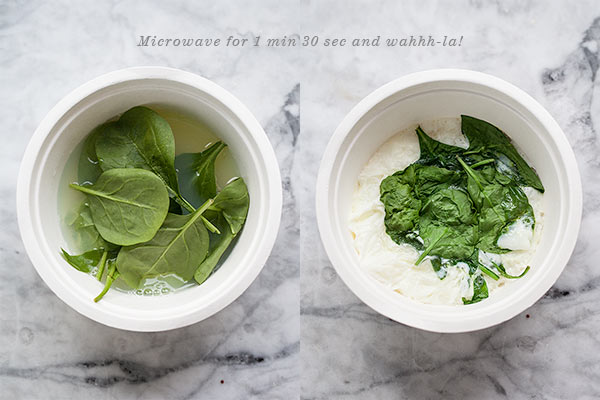

account_circle
Pasta_Lover62
{" "}
Subscribe
Microwave Bagel Sandwich
Ingredients
- 1 Bagel
- 3/4 cup egg whites
- 10-15 fresh spinach leaves
- 2 slices tomato
- 1/3 cup cheese
- 2-4 slices avocado
-

step 1
Toast bagel thin in the toaster or toaster oven. In a small bowl add egg whites and spinach leaves, season with kosher salt.
Place in microwave for 1 minute 30 seconds, keeping an eye on the eggs so they don’t overflow. -

step 2
Smear wedge of cheese on toasted bagel thin and add slices of tomato. Spoon egg out of bowl in a single patty
and place on top of cheese and tomato, top with avocado. Season with more salt and hot sauce if desired.